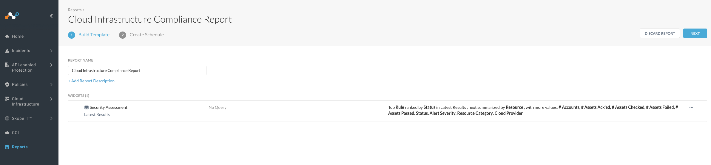

Compliance
Netskope Public Cloud Security continuously audits all the IaaS resources to identify compliance rule violations. The Compliance page provides the status of the checks on all the compliance rules and IaaS resources. To view the Compliance page, go to Cloud Infrastructure > Compliance in the Netskope UI.

The page provides the last updated date and time in UTC.
You can toggle between Rules, Resources, and Raw Findings to view the audit results.
To export the table as a CSV file, click Export. You can choose which columns are shown by clicking the gear icon and enabling specific columns. The Rules page displays the following information.
Rules Failed: The total number of compliance rules that failed against a resource.
Rules Passed: The total number of compliance rules that passed against a resource.
Total Rules: The total number of compliance rules checked against a resource.
Failed Unmuted: The percentage of failed rule-resource pair that are unmuted. For more information, see Handling Compliance Findings.
Status: Status of the rule when checked against the resource. If the resource contains rule violations, the rule status shows Failed.
Name: The compliance rule name.
Severity: The level of severity of the violation. There are four levels: Critical, High, Medium, and Low.
Resource Category: The IaaS resources category. For a complete list of resource categories and IaaS services, see List of Netskope Resource Categories and IaaS Services.
Resource Type: The IaaS resource type.
Cloud Provider: The cloud service provider. Netskope Public Cloud Security provides security for AWS, Azure, and GCP.
Account Name: The account name of the IaaS service.
# Resources Failed: The total number of resources that failed the compliance rule.
# Resources Passed: The total number of resources that passed the compliance rule.
# Resources Checked: The total number of resources checked against a compliance rule.
Click Resources to view information on the resources. The Resources page displays the following information.
Resources Failed: The total number of resources that failed the compliance rule.
Resources Passed: The total number of resources that passed the compliance rule.
Total Resources: The total number of resources checked against a compliance rule.
Failed Unmuted: The percentage of failed rule-resource pair that are unmuted. For more information, see Handling Compliance Findings.
Status: Status of the resource when checked for compliance. If the resource contains rule violations, the resource status shows Failed.
Name: The resource name.
Severity: The level of severity of the violation. There are four levels: Critical, High, Medium, and Low.
Resource Category: The IaaS resources category. For a complete list of resource categories and IaaS services, see List of Netskope Resource Categories and IaaS Services.
Resource Type: The IaaS resource type.
Cloud Provider: The cloud service provider. Netskope Public Cloud Security provides security for AWS, Azure, and GCP.
Account: The account name of the IaaS service.
# Rules Failed: The total number of compliance rules that failed against a resource.
# Rules Passed: The total number of compliance rules that passed against a resource.
# Rules Checked: The total number of compliance rules checked against a resource.
Click Raw Findings to view the compliance findings of your rules and resources. This page provides an aggregated list of all the rules and resources that have failed, passed, remediated, and muted.
Using Filters
By default, the Rules, Resources, and Raw Findings pages display the latest audit results. You can choose to view the results for a specific date.
To filter your view by a specific date,
Click the Time drop-down to select Latest Result or As of Date to select a specific date.
Specify the date and time in the date picker. Click Apply.
You can filter the results displayed on the page by selecting Resource Category, Tags, and Cloud Provider. To further narrow the results on the page, click Add Filter and select an option from the list.
You can choose to filter based on the following options.
Status: Select Failed or Passed.
With Error: Select Yes or No.
Muted: Select Yes or No.
Rule name: Select Rule Name and enter a rule name in the search field.
Profile: Select a security assessment profile from the list. For information on creating a security assessment profile, see Create a Security Assessment Profile.
Policy: Select security assessment policy from the list. For information on creating a security assessment policy, see Create a Security Assessment Policy.
Severity: Select a severity level. They are four levels: Critical, High, Medium, and Low.
Compliance Standard: Select or search for a compliance standard. For example, NIST-CSF-1.1.
Section: Select the compliance standard section. This value corresponds to the section in the compliance standard documentation where this rule is defined.
Control: Select the compliance standard control. This value corresponds to the control number in the compliance standard documentation where this rule is defined.
Resource Name: Select Resource Name and enter a resource name in the search field.
Netskope Resource ID: Select Netskope Resource ID and enter a resource ID in the search field.
Account: Select Account Name and enter an account name in the search field.
Region: Select Region and select a region from the list or enter the region in the search field.
Rule Detail
You can click on a rule in the rules table in the Rules or Raw Findings pages to view detailed information about the rule. The Rule Detail window provide a description of the rule.
The window contains the following three tabs,
Definition: The rule syntax defining the predefined or custom rule. Custom rules can be defined using Domain Specific Language.
Remediation: The remediation action to be performed to remediate the violation. Some rules also provide manual steps to remediate the violation.
Compliance: The various compliance standards that the rule satisfies. This tab provides the compliance standard, section, control, and description of the rule defined in the compliance standard's documentation.
Reporting
Use the Reports option to create a Compliance Report or to view existing reports in the Reports page.
Under Reports, select Create Compliance Report to build a custom template for your compliance reports and create a schedule to generate the reports. The Cloud Infrastructure Compliance Report page is displayed.
Under Build Template, provide a report name and description.
Click on the default Security Assessment widget. You can edit the name of the widget.
Under Query, select a cloud provider and add filters to query the compliance findings. When finished, click Save to save the query to the widget.
Click Next to create a reporting scheduling.
Select the frequency and time at which the reports are to be generated.
Specify the users to notified and select the output format as PDF or CSV or both. Click Create and then click Done.
The compliance report template is displayed in the Reports page. You can also view the Reports page from Cloud Infrastructure > Compliance by clicking Reports > Go To Reports Page.
Handling Compliance Findings
You can mute failed assessments to indicate false positives or allow DevOps team some time to remediate. The Mute feature does the following:
Automatically acknowledges any alerts generated from an assessment. The alerts are muted indefinitely, until you unmute. This allows you to grant a DevOps team a window of time to remediate the service configurations to get compliant.
Excludes the failed resources (when muted) in computing the Compliance Score for a profile.
You can access the muting and unmuting capability under Cloud Infrastructure > Compliance.
To mute a rule-resource pair,
Click on Raw Findings tab.
Click the More Options icon (...) to the right of the rule name and click Mute.
In the Mute window, select how long you want to mute this finding. You can add a short label under Justification Label to justify why you're muting this finding.
Click Mute.
Since every finding has a corresponding SkopeIT alert, muting a finding auto acknowledges the corresponding alert. You will stop receiving alerts related to failed rule-resource pair until you click Unmute.
The Compliance page displays the Failed Muted percentage, which is calculated using the formula,
(The number of unmuted rule-resource pair that have failed)/(Total number of rule-resource pair that have failed) * 100.
List of Netskope Resource Categories and IaaS Services
Note
For the complete list supported IaaS services, see Supported IaaS Entities.
Netskope Resource Category | AWS Service Name | Azure Service Name | GCP Service Name |
|---|---|---|---|
Compute | EC2 Lambda | Compute | Kubernetes ComputeEngine |
Configuration Management | Config | - | API |
Database | RedShift RDS Dynamo | SQL | BigQuery |
Identity | IAM | AAD Auth | IAMPolicy |
Management | CloudTrail CloudWatch CloudFormation | Monitor | Logging Project ProjectIAM |
Messaging | SNS SES SQS | - | - |
Network | Route53 ElasticLoadBalancer | Network | VPCnetwork DNS |
Security | KMS | SecurityCenter KeyVault | - |
Storage | S3 | Storage | - |